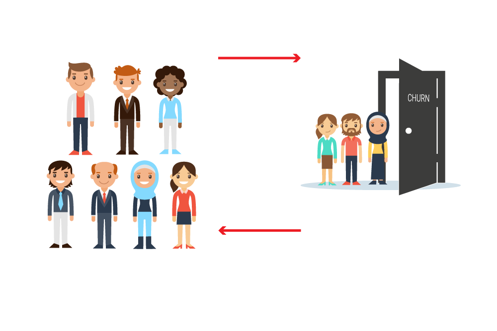

In the age of Fierce Competition, most of the companies are ignorant of the fact that customer retention is a key to promote long run of an association. To retain customers, it is paramount to know the reasons they disassociate themselves with the brands/products which they have been using.
Reverse engineering is the go-to way for identifying these reasons and in context of data analysis we call it customer churn. Identifying the reasons for customer churn would give us better headway to avoid it.
Whether it be a retail business or any online subscription service, retaining customers and subscribers is something that defines and drives the longevity of the association. Recently, we were approached by an online retail business wanting us to identify the sudden discontinuation in monthly subscriptions they were experiencing for last 2 months and we ended up recommending customer churn analysis to them as well.
 width="50%">
Customer churn in Ecommerce business occurs when a customer stops using their product, stops visiting a particular eCommerce website or switch to lower-tier experience or switch to competitor’s products. Measuring the churn rate is quite crucial for eCommerce businesses as the metric reflects customer response towards the product, service, price and competition. Keeping all that in mind, we did an exploratory analysis on satisfaction data - Installation, Fault, Communication etc. to determine the impact of different components of satisfaction data on the overall churn. We worked closely with the client’s team and did a series of analysis in understanding customer behaviour.
We took into consideration the following key factors and developed a sustainable and robust strategy for customer retention.
The results came out good, the client was able to identify potential network issues, competitive threats, negative customer experience trends & created usage driven customer groups to improve retention.